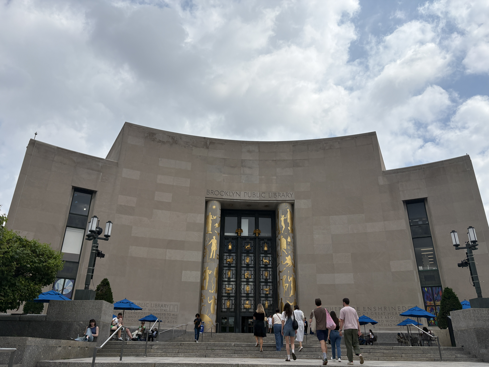

Central LibraryThe main branch of the Brooklyn Public Library |
|||||||||||||||||
|
 |
The Central Library is the main branch of the BPL. It is located on Grand Army Plaza, at the corner of Flatbush Avenue and Eastern Parkway. Construction on this site began in 1912, but with setbacks, changing plans, and even demolotions, did not open its doors until the 1940s. The main entrance, pictured here, has become iconic with its liteary motifs and large columns and doors that look like book spines. The Central Library has 1.7 million items in its collection and sees over 1 million vistitors per year. Information sourced from Wikipedia. Photograph taken by Liefe Temple. Hours of operation
| ||||||||||||||||